Restaurant Cascade
Fast Food
- Sandwich tunisien (thon, escalopes, chawarma, kebab local) : 5 à 10 TND
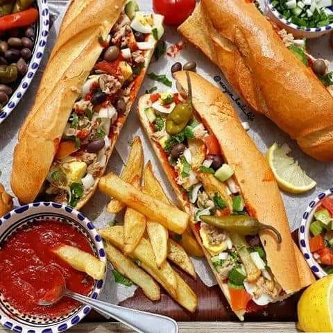
- Fricassé ou petits salés : 1 à 4 TND pièce

- Assiette lablabi : 4 à 8 TND
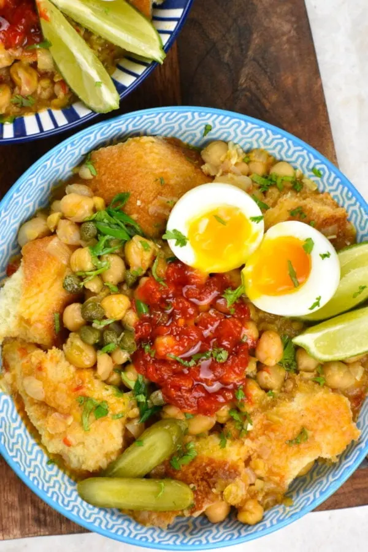
- Ojja merguez : 8 à 15 TND
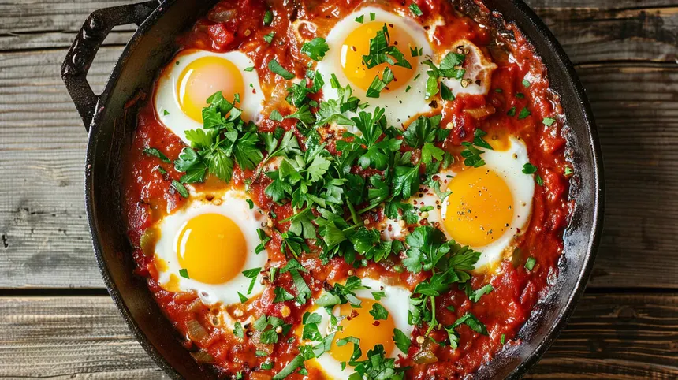
Salades et entrées
- Salade méchouia, salade tunisienne, slata : 5 à 15 TND
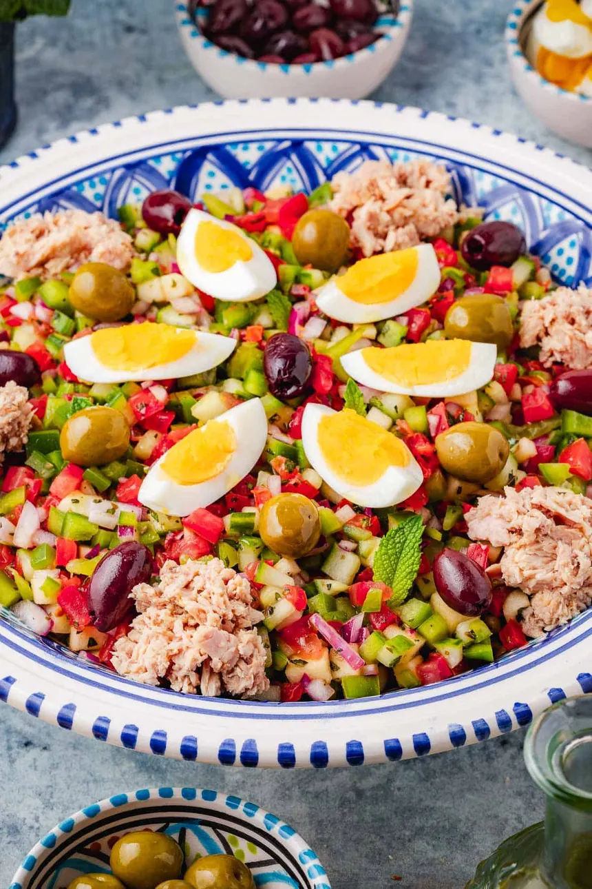
- Brick (thon, œuf, crevettes selon) : 3 à 12 TND
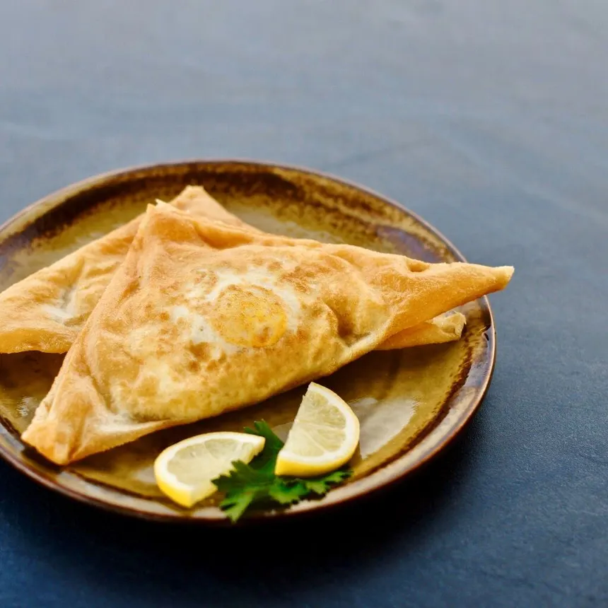
- Assortiment de salades : 10 à 25 TND
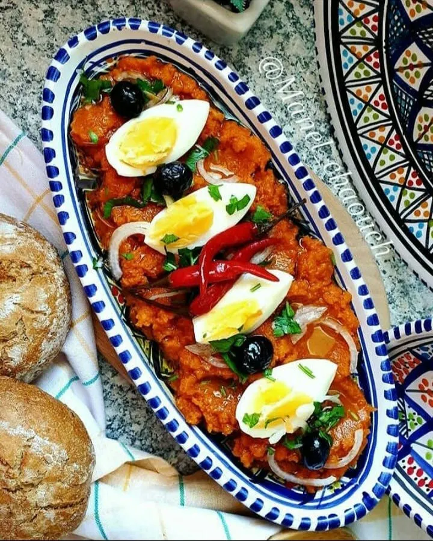
Plats principaux
- Couscous (poulet, agneau, poisson selon) : 15 à 45 TND

- Tajine tunisien : 12 à 25 TND
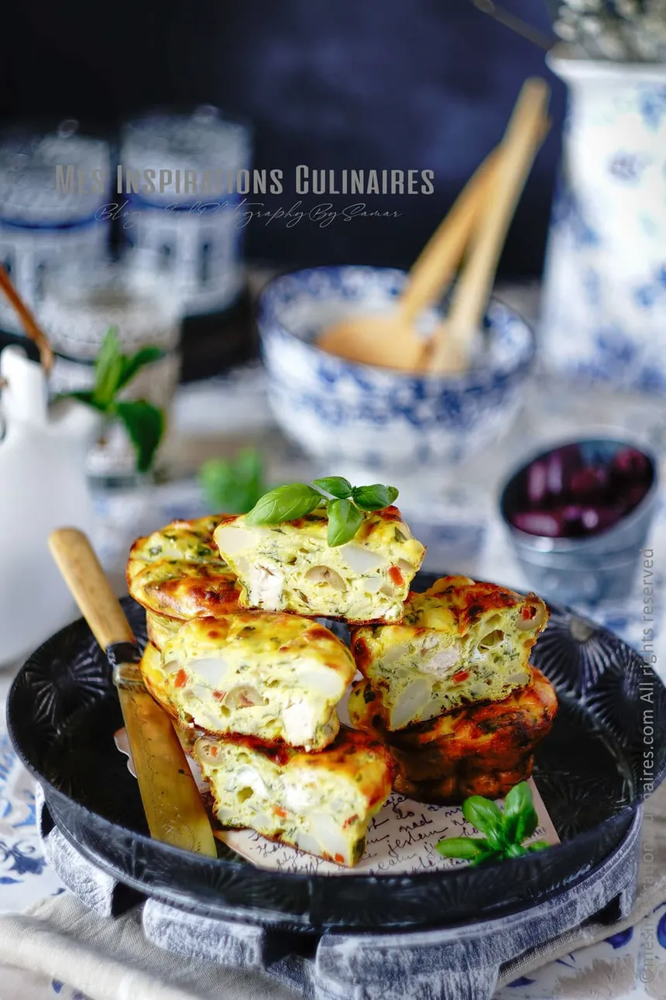
- Ojja merguez : 8 à 20 TND
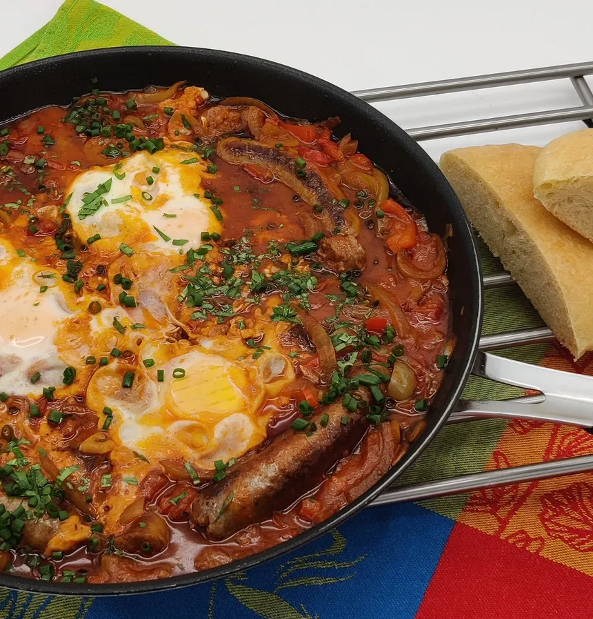
- Grillades : 18 à 45 TND
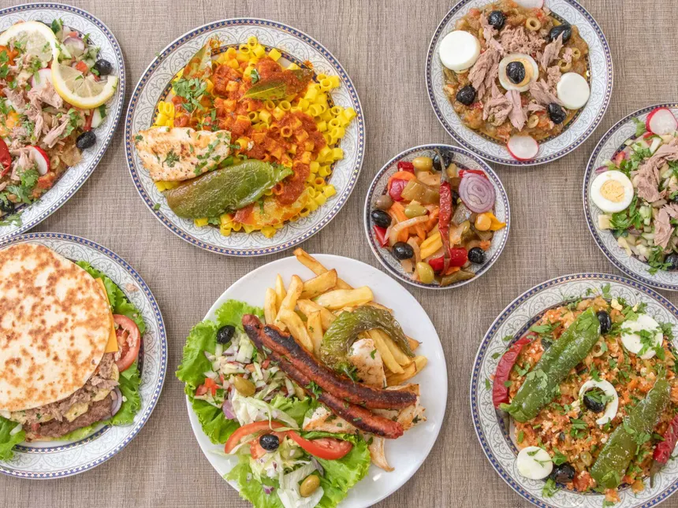
- Pâtes aux fruits de mer : 25 à 60 TND
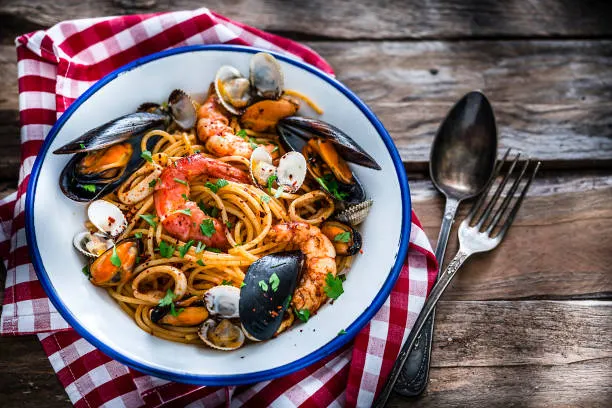
Quelques repères
Poisson et fruits de mer
C'est le point qui peut faire augmenter rapidement l'addition.
Dans beaucoup d'adresses en bord de mer, le poisson est affiché au kilo.Tu choisis ton poisson au comptoir.
- Poisson simple selon arrivage : 40 à 120 TND le kilo
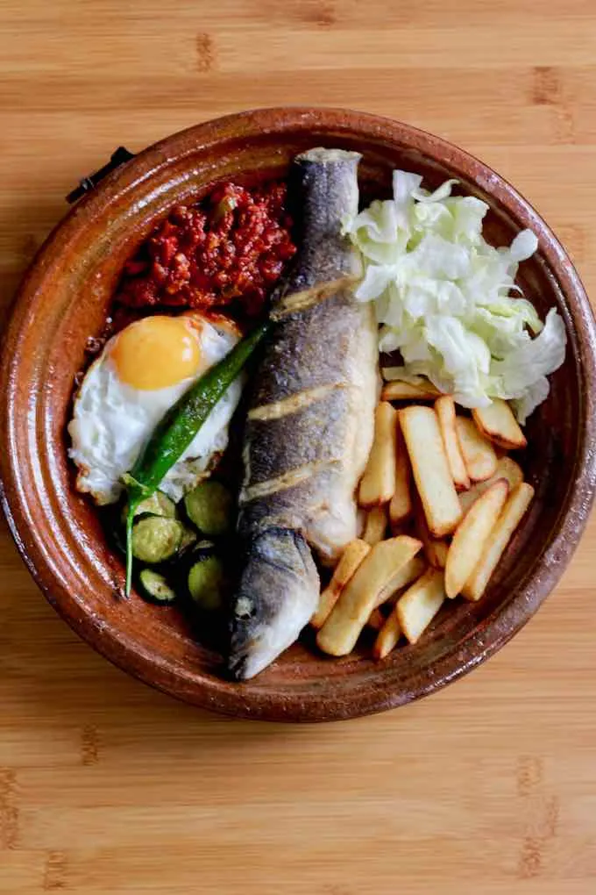
- Dorade, loup, daurade royale, etc. : souvent plus
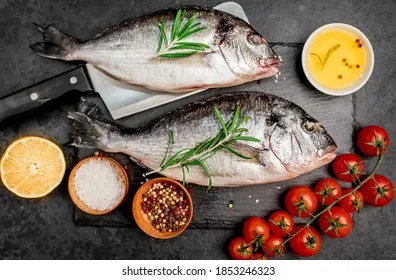
- Fruits de mer, crevettes, calamars : ça monte vite
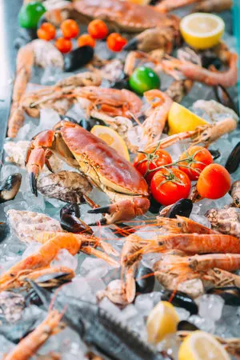
Conseil : demande clairement « Ça fera environ combien pour une portion ? »avant de valider.
Nos boissons
Boissons non alcoolisées
- Eau minérale (0,33 L) : 4,30 TND
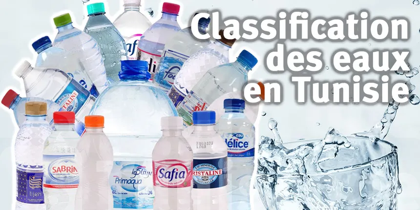
- Soda (0,33 L) : 1,50 à 3,40 TND
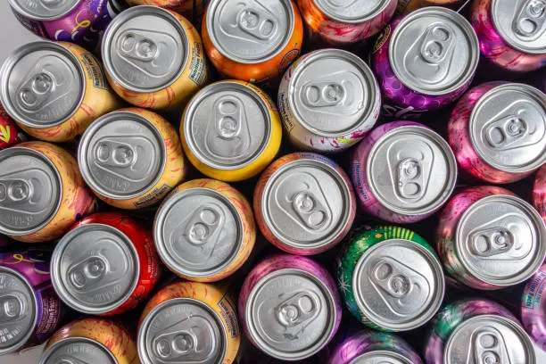
Boissons alcoolisées
- Bière locale (0,5 L) : 4,99 TND

- Vin (bouteille milieu de gamme) : environ 20 TND

Desserts et café
- Pâtisseries tunisiennes : 2 à 8 TND
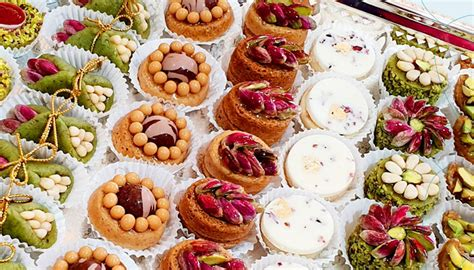
- Dessert maison : 6 à 15 TND
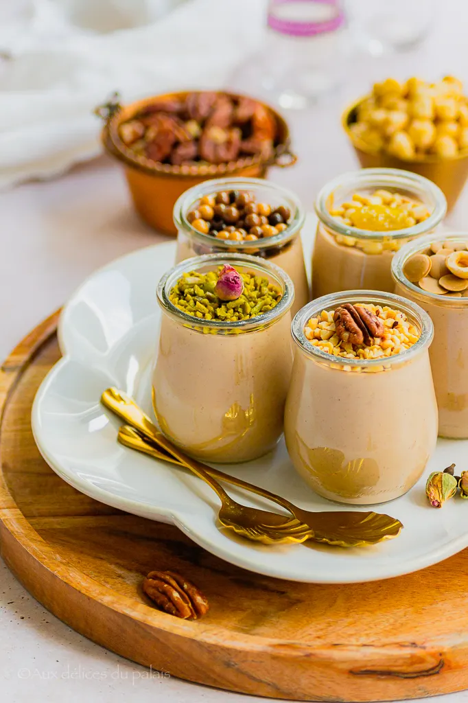
- Café espresso : 2 à 5 TND
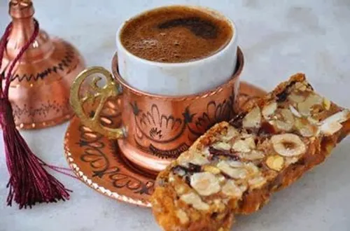
- Thé à la menthe ou aux pignons : 3 à 10 TND

Notre repas
- Petit repas snack : 8 à 15 TND

- Repas classique assis : 20 à 40 TND

- Repas touristique ou plus travaillé : 40 à 80 TND

- Haut de gamme : à partir de 80 TND
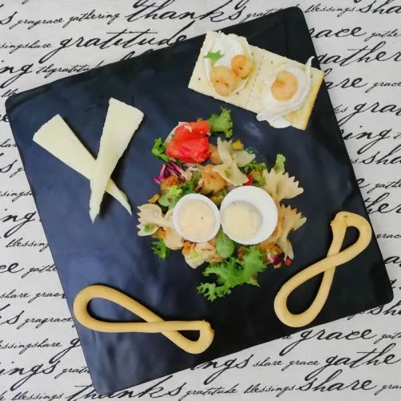